This past season of 2016 has produced many upests agaisnt the biggest clubs and seeing many of the smaller clubs rise to the top. These include GWS and teams such as Melbourne Demons and Saint Kilda Saints just missing out on the finals in 9th and 11th. GWS though had the biggest comeback coming 4th. This is mostly because of tranfers such as Shane Mumford and Stevey J. Despite this the Sydney Swans came 1st with a shock season from Hawthorn coming 5th and being knocked out by the reining premiers the Western Bulldogs in the first round.
18. Brisbane Lions
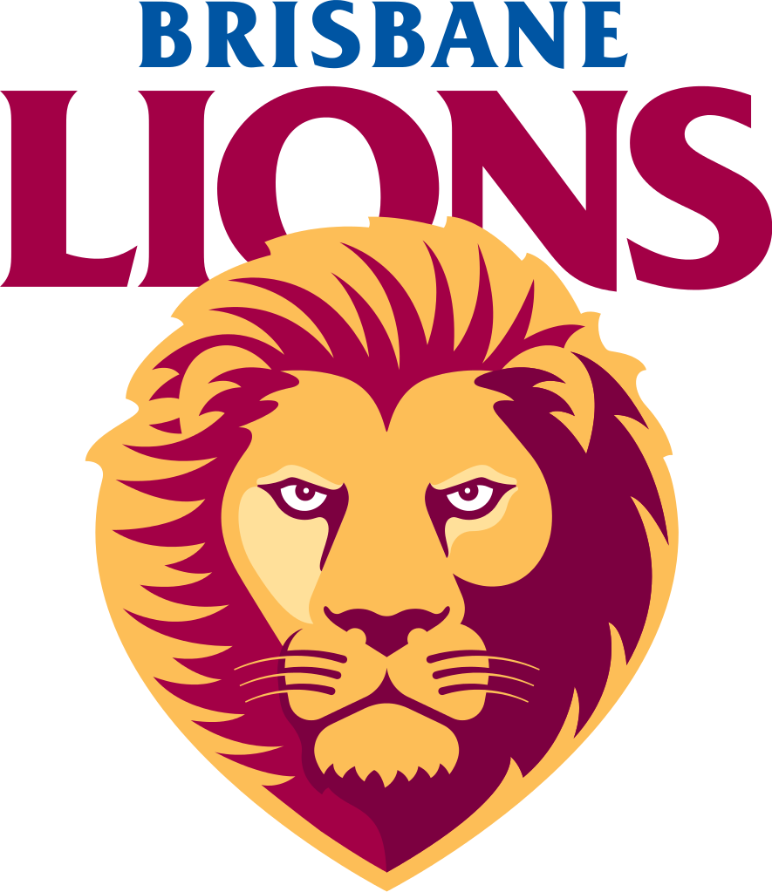17. Gold Coast Suns
16. Carlton Blues
15. Richmond Tigers
14. Essendon Bombers
13. Fremantle Dockers
12. Collingwood Magpies
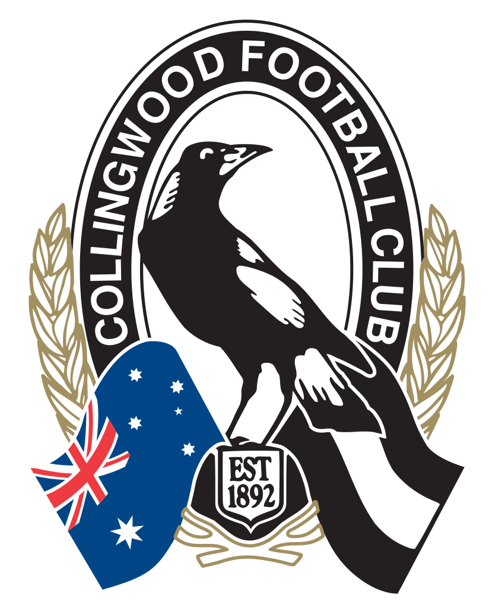11. North Melbourne Kangaroos
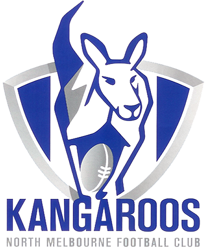10. Melbourne Demons
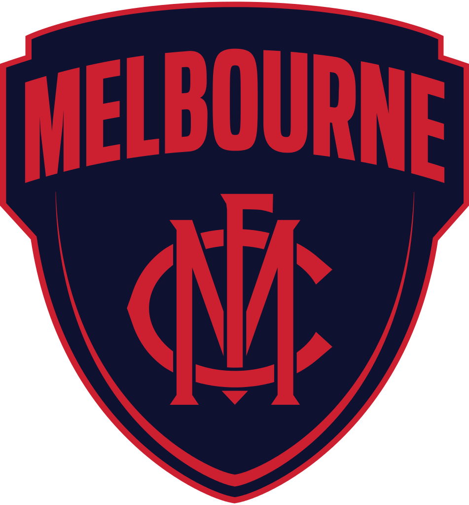9. St Kilda Saints
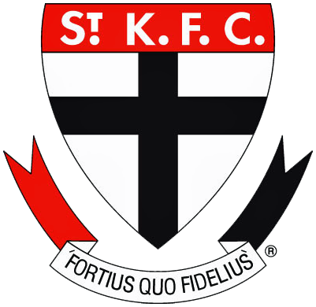8. Adelaide Crows
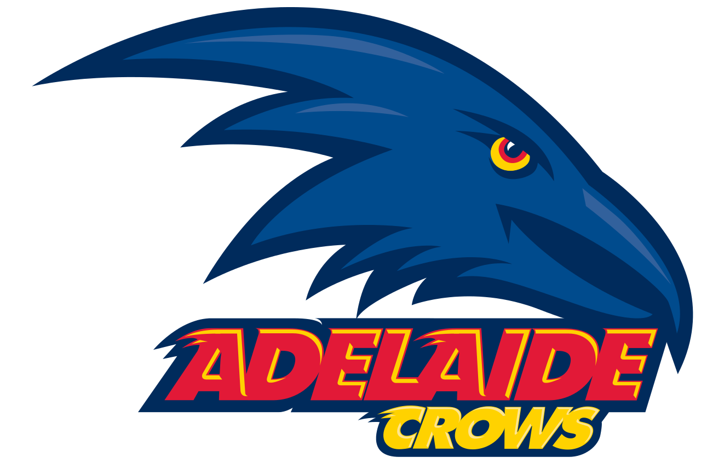7. Port Adelaide Power
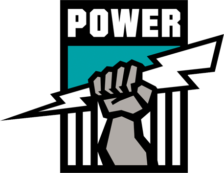6. Hawthorn Hawks
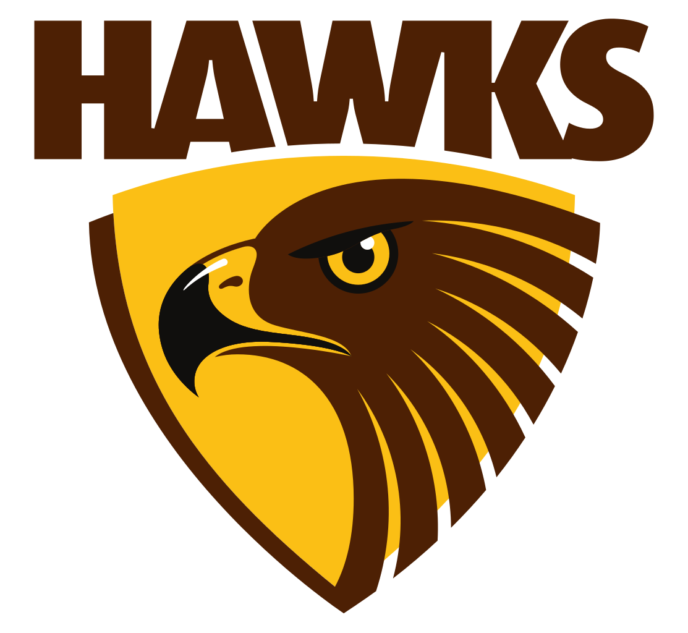5. Western Bulldogs
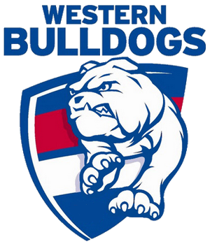4. Westcoast Eagles
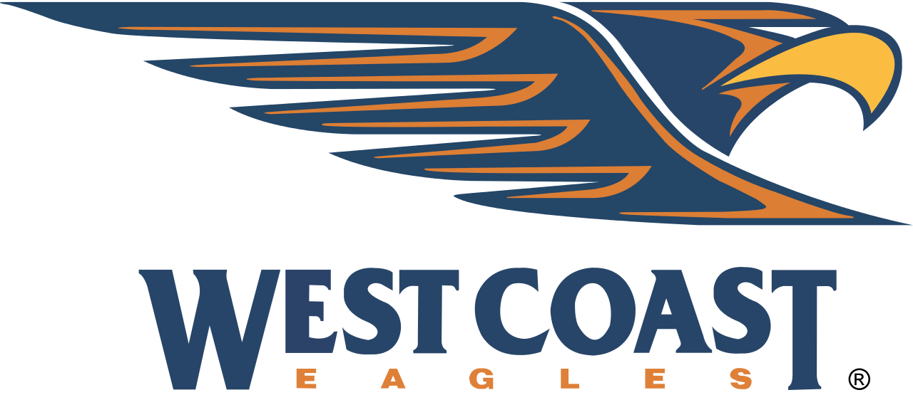3. GWS Giants
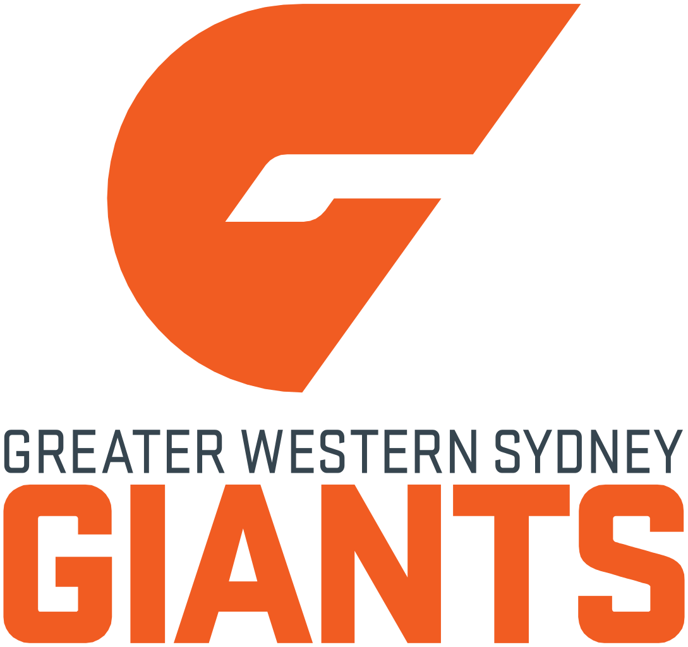2. Geelong
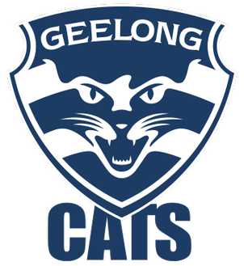1. Sydney Swans
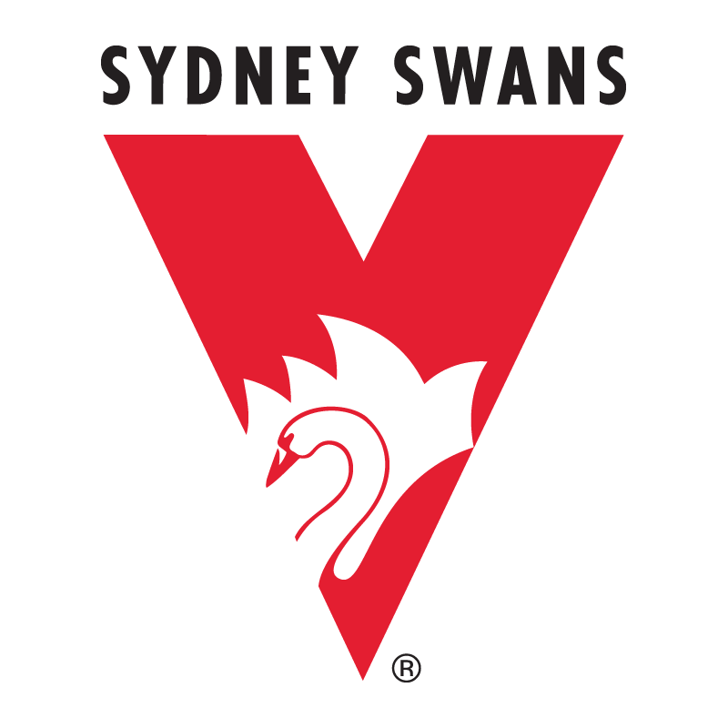After the Western Bulldogs shocked the whole AFL world with a shock sudden rise to win the premiership to end a 55 year drought agaisnt the Sydney Swans who knows what will happen next year. The highlights of the 2016 grand final will talk for how th swans collapsed yet agin in a grand final. But hopefully this prediction will be right.